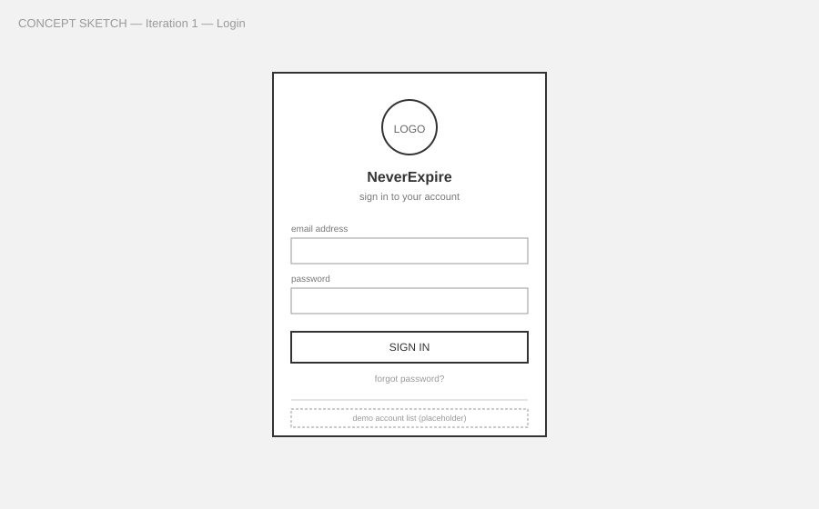
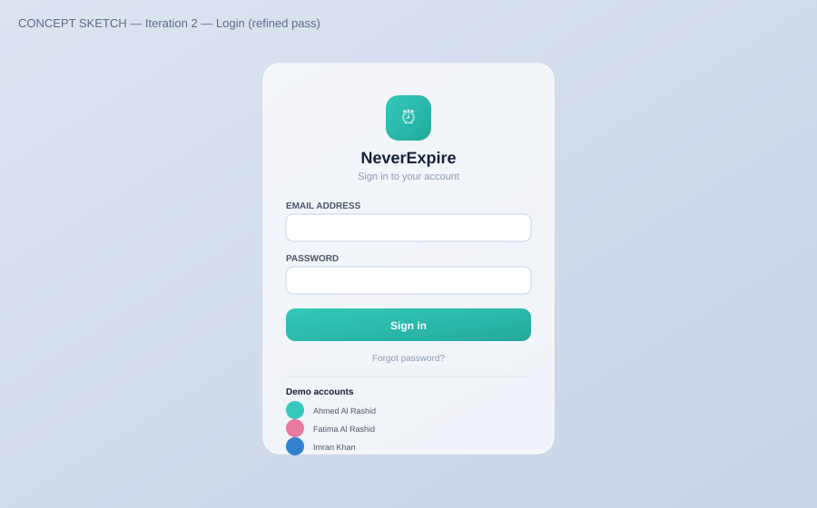
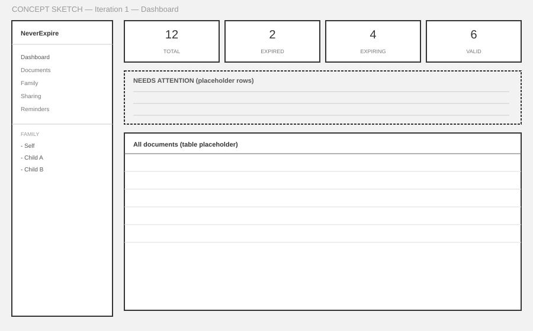
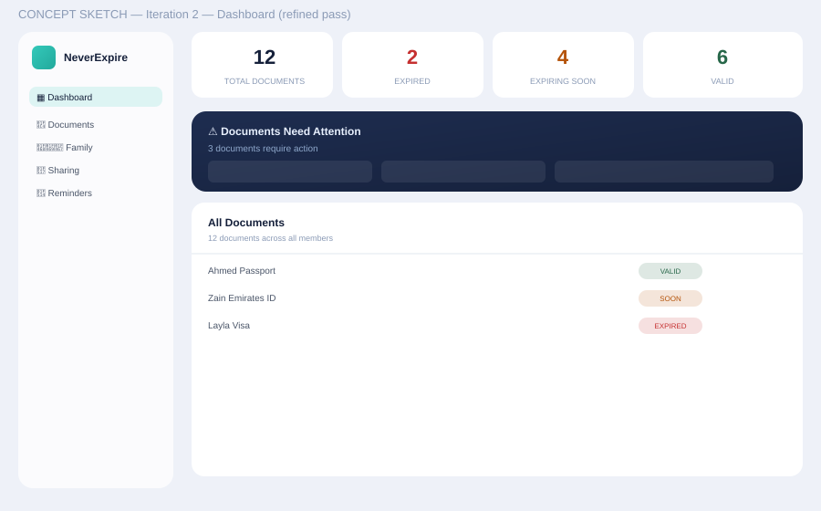
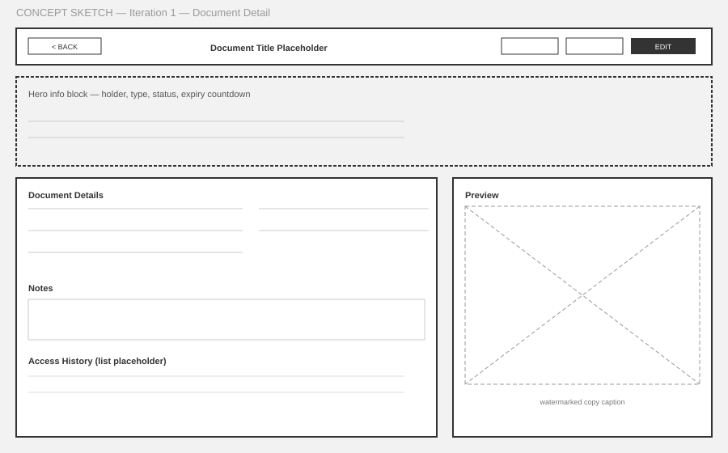
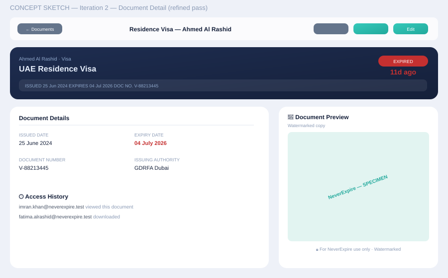
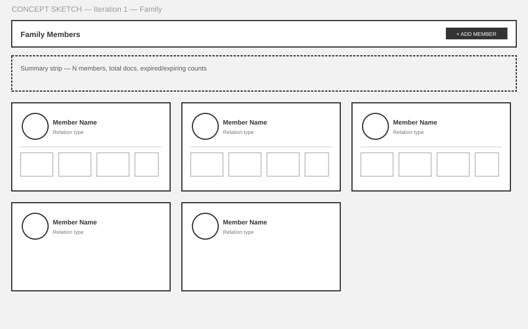
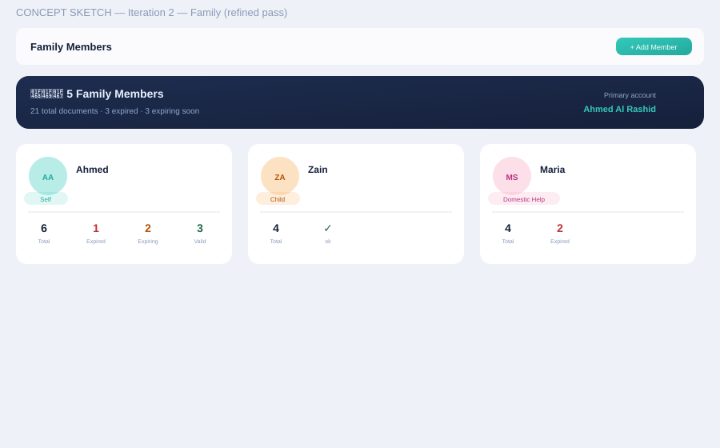

Low-fidelity concept sketches showing how each core screen evolved before reaching the shipped glassmorphic design.
| ID | Screen | Primary User | Objective | Status |
|---|---|---|---|---|
| S-01 | Login | All | Authenticate, quick demo-account access | ✅ Shipped |
| S-02 | Dashboard | All | Family-wide status at a glance, drill into what needs attention | ✅ Shipped |
| S-03 | Documents List | All | Browse/search/filter every tracked document | ✅ Shipped |
| S-04 | Document Detail | Owner / Recipient | Full record, watermarked preview, sharing, access history | ✅ Shipped |
| S-05 | Family | Owner | Manage members, per-member status breakdown | ✅ Shipped |
| S-06 | Sharing | Owner / Recipient | Manage outgoing/incoming shares | ✅ Shipped |
| S-07 | Reminders | Owner | Personal reminder list, on-demand digest send, dismiss | ✅ Shipped |
| S-08 | Mock Inbox | Owner (demo) | Live visibility into sharing + reminder emails for stakeholder walkthroughs | ✅ Shipped |
Every core screen followed the same two-stage pattern before further icon/visual polish rounds:
From there, the shipped product went through additional rounds not re-illustrated here in full: an app-wide icon system pass, a 3D "glossy puck" treatment for primary navigation chrome, donut-chart gloss/shadow refinement, and a cross-platform icon consistency pass (see MVP Backlog).


Key decision validated at concept stage: a single centered card, minimal fields, with quick demo-account access below the fold — kept all the way through to what shipped.


Key decision validated at concept stage: sidebar + stat row + "needs attention" band + full table, in that vertical order — the "attention" band became the dark hero card that carries through the shipped design.


Key decision validated at concept stage: two-column layout (details + notes + access history on the left, file preview on the right) — this structure is exactly what made the later trust features (watermark labeling, access history) easy to add without a redesign.


Key decision validated at concept stage: a summary strip above a grid of per-member cards, each carrying its own status counts — this is what let the dashboard's member-filter behavior stay consistent with the Family page itself.
Screens that reached a stable structure at the concept stage (Dashboard, Document Detail, Family) absorbed every later feature — sharing, watermarking, access history, reminders — without a structural rebuild. That's the direct payoff of validating information architecture before visual polish, and it's why the same pattern is the recommended approach for any new screen going forward (e.g. a future native push-notifications settings screen, or the Sprint 6 mobile store-readiness work).